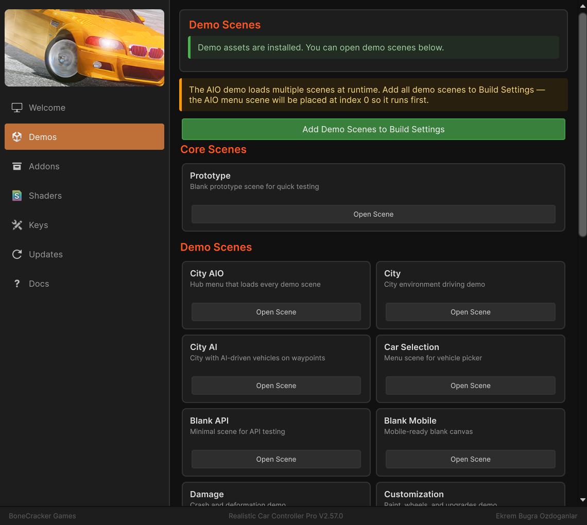

Demo Content
Table of Contents
- Demo Content
- Installing Demo Content
- Method 1: Welcome Window (Recommended)
- Method 2: Manual Import
- Removing Demo Content
- Prototype Scene (Always Available)
- Demo Scenes
- Build Settings Auto-Registration
- Demo Vehicles
- Demo Scripts
- Scene Management Scripts
- Vehicle Interaction Scripts
- Environmental Objects
- Interactive Stations
- Obstacles and Hazards
- Transport
- Destruction Props
- Pushable Props
- Using Environmental Objects in Your Own Scenes
- Demo Content Structure
- Next Steps
RCCP includes a set of demo scenes, vehicles, environments, and interactive objects as a separate addon package. The demo content is not imported by default -- you need to install it manually. This keeps your project size small until you choose to explore or reference the demos.
This page covers how to install the demo content, what each scene demonstrates, and how to use the included scripts and environmental objects in your own projects.
Installing Demo Content
There are two ways to install the demo content:
Method 1: Welcome Window (Recommended)
- Open the Welcome Window: Tools > BoneCracker Games > Realistic Car Controller Pro > Welcome Window.
- Go to the Demos tab.
- Click Import Demo Content.
- Confirm the import dialog.

Method 2: Manual Import
- Navigate to
Assets/Realistic Car Controller Pro/Addons/Installers/in your Project window. - Double-click
RCCP_DemoAssets.unitypackage. - In the Import dialog, click Import to bring in all demo assets.
After import, demo content is installed to:
Assets/Realistic Car Controller Pro/Addons/Installed/Demo Content/
The scripting symbol RCCP_DEMO is set automatically after a successful import.
Removing Demo Content
To remove demo content and reduce your build size, use the Delete Demo Content From Project button on the Demo Content card in the Welcome Window's Addons tab. This deletes the installed demo files, restores the demo vehicle and demo scene registries to their factory state, removes the demo scenes from Build Settings, and clears the RCCP_DEMO scripting symbol.
Prototype Scene (Always Available)
RCCP always includes one simple test scene, regardless of whether demo content is installed:
| Scene | Location |
|---|---|
| RCCP_Scene_Blank_Prototype | Assets/Realistic Car Controller Pro/Scenes/ |
This scene contains a flat ground plane with a single vehicle. Use it for quick testing, verifying your setup, or experimenting with RCCP components without needing the full demo package.
Demo Scenes
After installing demo content, the following scenes become available in Assets/Realistic Car Controller Pro/Addons/Installed/Demo Content/Scenes/:
| Scene | What It Demonstrates |
|---|---|
| RCCP_Scene_Blank | Empty scene with one vehicle -- minimal starting point |
| RCCP_Scene_Blank_API | Spawning and registering vehicles via the RCCP API |
| RCCP_Scene_Blank_Customization | The vehicle customization UI and system |
| RCCP_Scene_Blank_OverrideInputs | Controlling vehicles with external/custom inputs |
| RCCP_Scene_Blank_Transport | Vehicle teleportation using the transport API |
| RCCP_Scene_CityNew | Full city environment for free driving |
| RCCP_Scene_CityNew_AI | City environment with AI traffic vehicles |
| RCCP_Scene_CityNew_AIO | All features combined -- city, AI, customization, vehicle selection |
| RCCP_Scene_CityNew_SelectVehicle | Vehicle selection and switching at runtime |
| RCCP_Scene_Damage | The damage system in action |
Build Settings Auto-Registration
After the demo content .unitypackage is imported, the Welcome Window installer flow registers the demo content assets with the project automatically. Demo Content and Photon scenes are also pre-registered in EditorBuildSettings, so they appear in File > Build Settings without manual addition.
Demo Vehicles
Demo vehicle prefabs are referenced by the RCCP_DemoVehicles ScriptableObject located in:
Assets/Realistic Car Controller Pro/Resources/RCCP_DemoVehicles.asset
These prefabs are fully configured with all RCCP components (engine, gearbox, lights, damage, and so on). They serve as useful references when setting up your own vehicles. To inspect one, select a demo vehicle prefab and examine its components in the Inspector.
Demo Scripts
The following scripts drive the demo scenes. They are located in Assets/Realistic Car Controller Pro/Scripts/Demo/ and can be used as reference for your own implementations.
Scene Management Scripts
| Script | Purpose |
|---|---|
RCCP_Demo | Main demo UI controller. Manages vehicle spawning, vehicle selection, behavior switching, scene restart, and quit. Used in most demo scenes. |
RCCP_DemoAIO | All-in-one demo controller for the AIO scene. Handles scene loading with a loading screen, addon button states (Photon, SharedAssets, Traffic), and persists across scene transitions via DontDestroyOnLoad. |
Vehicle Interaction Scripts
| Script | Purpose |
|---|---|
RCCP_CarSelectionExample | Example vehicle gallery / showroom. Spawns vehicles from the demo vehicles list and lets the player cycle through them. Good reference for building your own vehicle selection screen. |
RCCP_CharacterController | Animates the driver character model. Feeds vehicle state (speed, steering, and so on) to the driver's Animator component. |
RCCP_Telemetry | Displays a runtime UI overlay with vehicle telemetry data (speed, RPM, gear, and other values). Useful for debugging and testing. |
Environmental Objects
RCCP includes several interactive objects you can place in your own scenes. All of them use trigger colliders and detect vehicles automatically. They are located in Assets/Realistic Car Controller Pro/Scripts/Demo/.
Interactive Stations
| Object | Script | What It Does |
|---|---|---|
| Gas Station | RCCP_GasStation | Refuels the vehicle over time when it enters the trigger zone. Only works if the vehicle has a FuelTank component enabled. The refillSpeed field controls how fast the tank fills. |
| Repair Station | RCCP_RepairStation | Instantly repairs all vehicle damage when the vehicle enters the trigger zone. Requires the vehicle to have a Damage component. |
| Customization Station | RCCP_CustomizationStation | Opens the customization menu when the vehicle enters the trigger zone. Requires the vehicle to have a Customizer component. |
Obstacles and Hazards
| Object | Script | What It Does |
|---|---|---|
| Spike Strip | RCCP_SpikeStrip | Deflates tires when a wheel collider enters the trigger zone. |
| Speed Limiter | RCCP_SpeedLimiter | Slows the vehicle by increasing its rigidbody drag while inside the trigger zone. |
Transport
| Object | Script | What It Does |
|---|---|---|
| Teleporter | RCCP_Teleporter | Teleports the vehicle to a designated destination point when it enters the trigger zone. |
Destruction Props
| Object | Script | What It Does |
|---|---|---|
| Crash Hammer | RCCP_CrashHammer | Animated hammer that swings and impacts vehicles. |
| Crash Press | RCCP_CrashPress | Animated press that crushes vehicles from above. |
| Crash Shredder | RCCP_CrashShredder | Animated shredder for vehicle destruction. |
Pushable Props
| Object | Script | What It Does |
|---|---|---|
| Prop | RCCP_Prop | Generic interactive prop (cones, barriers, and so on) that can be pushed around by vehicles using physics. |
Using Environmental Objects in Your Own Scenes
To add any of these objects to your scene:
- Locate the prefab in the demo content Prefabs folder, or create a new GameObject.
- Add the corresponding script component (for example, Add Component > BoneCracker Games > Realistic Car Controller Pro > Misc > RCCP Gas Station).
- Ensure the GameObject has a Collider with Is Trigger enabled.
- For the Teleporter, assign a destination Transform in the Inspector.
- For the Gas Station, adjust the
refillSpeedvalue as needed.
Demo Content Structure
After installation, the demo content folder is organized as follows:
Addons/Installed/Demo Content/
Animators & Animations/ -- Character and prop animations
Documentation/ -- Demo-specific notes
Editor/ -- Editor scripts for demo initialization
Materials/ -- Materials for demo environments and props
Models/ -- 3D models for city, props, and characters
Prefabs/ -- Ready-to-use prefabs for all demo objects
Scenes/ -- All demo scenes listed above
Terrain/ -- Terrain data for city environments
Textures/ -- Textures for demo assets
Next Steps
- Vehicle Setup -- Create your own vehicle from scratch
- Installation -- Install additional addon packages (Photon, Mirror, Traffic)
- Customization -- Explore the vehicle customization system
- API Reference -- Learn the public API used in the API demo scene
- Render Pipelines -- Set up materials for URP or HDRP if demo scenes look wrong
Support: bonecrackergames@gmail.com | www.bonecrackergames.com
Need help? See Troubleshooting